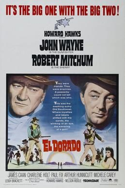

El Dorado

Starring: John Wayne, Robert Mitchum, James Caan
Director: Howard Hawks
Writer: Leigh Brackett, Harry Brown
Producer: Howard Hawks, Paul Helmick
El Dorado is a 1966 American Western film directed and produced by Howard Hawks and starring John Wayne and Robert Mitchum. Written by Leigh Brackett and loosely based on the novel The Stars in Their Courses by Harry Brown, the film is about a gunfighter who comes to the aid of an old friend who is a drunken sheriff struggling to defend a rancher and his family against another rancher trying to steal their water.
Trivia
- Leigh Brackett wrote the original script, which she described as "the best script I had ever done in my life.
- And I kept saying to Howard I did that, and he'd say it was okay, we could do it over again." Mitchum later said: "When Howard called me, I said, 'What's the story?' and he said, 'No story, just characters' and that's the way it was.
- Did one scene, put it away, did another, put it away." Cinematographer Harold Rosson had retired in 1958, but Hawks persuaded him to come back to work.
Filming Locations
- Arizona
- Utah
- El Dorado was shot in Technicolor at Old Tucson Studios just west of Tucson, Arizona, and in and around Kanab, Utah, from October 1965 to January 1966.
Previous Showings
1 Run • 1 Festival
All runs on record (1):
- June 13 - 14, 2012Howard Hawksw/ Rio Lobo